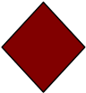

Homework 2
(15 points)
Purpose
This assignment is a chance to learn a bit about the Java Swing package, and explore some of the design issues involved in structuring programs around models and views. It is also a chance to gain some experience designing classes and figuring out how to distribute code in a class hierarchy. In this assignment, you'll construct the model and view part of a graphics drawing program. Next time, we'll extend the program to add a controller.
There is no starter code this time, but you'll find several useful examples posted on the class calendar and in Lab #3.
The goal is that when the program runs, a frame will be displayed with a number of shapes drawn on it. (See the shapes below).
Class Organization
Organize your code using a model-view pattern similar to the one used in the BallSim demo. The main difference is that you must include an abstract class to represent generic shapes, and create specific shapes by extending that class. The abstract class gives you a place to put code that is common to all shapes, without having to duplicate it in each specific class.
Your code should be organized using the following classes and interfaces:
- Interface Shape. The minimal interface of a shape. This should include, at least, a method to draw the Shape on a java Graphics object. As the program evolves, you may need to add additional methods to this interface, but keep it as small as possible for now. (At this point, there should not be any code to handle events. Event handling will be included in the next installment of this assignment.)
- Class AbstractShape. This should be an abstract class that implements interface Shape. Add instance variables, additional methods and default implementations here once it becomes clear that all Shapes need to have such fields.
- Specific concrete shape classes that extend AbstractShape. You must provide classes for the following 2 shapes: the filled-in diamondand the plus. The height and width dimension of the diamond are the same; same for the plus shape. Constructors should allow the client to specify the (x,y) position of the center of the new object, its color and its size. You can add other attributes in the constructor if you'd like. The two classes should also have a method that returns a deep copy of its calling object (this is so that the model can return a deep copy of its lists of shapes. See below). Do so by implementing the Cloneable interface and override the Object clone method, or by writing your own method (such as public Shape copy() whose declaration could be written in the Shape interface). Just make sure that the copy is a deep copy.
You can also choose to make some other classes if you like, such as squares, circles, triangles, composite shapes, etc.
- Class DrawingModel. This is the model that holds the state of the drawing, and will probably be the most complex class. It should maintain a collection of Shapes and make a deep copy of the collection available when requested ( use the clone implementations of the Diamond and Plus classes). Other behaviors it should support are
- A client should be able to add a Shape to the model
- A viewer should be able to register with the model
- It should notify all viewers when something in the model changes. (For now, the only changes will be when a new shape is added to the drawing.)
- Interface DrawingView. This interface should describe the minimal information about a viewer needed for the DrawingModel to interact with it (probably just a notify method).
- A viewer class that extends JPanel and implements DrawingView. When notified of changes in the DrawingModel, it should draw all shapes from the model within the panel.
- MainClass program. Create a class with a main method that creates the DrawingModel and Viewer and sets them up so that the state of the DrawingModel is displayed within a JFrame. Create some random diamonds and plusses (and any other shapes you have) with different colors, sizes, and locations and have them displayed to the user (by adding them to the model).
Don't forget...
Make sure you have documented your public interfaces well. Remember, you are building these classes from scratch. No one has any idea of what they do except you. You need to communicate these ideas to the reader.
Written Report (5 points):
You must turn in a short typed report that discusses your program, describes the class design, and discusses issues you encountered while working on it. Your report should cover:
- Planning: How did you plan and organize your program? What does it do?
- Implementation: How is your program organized? What are the major classes? How do the objects interact? Draw a diagram.
- Testing: How did you test your code? What sort of bugs did you encounter? Are there any unresolved problems in the code?
- Evaluate this project. What did you learn from it? Was it worth the effort? This could include things you learned about specifications and interfaces, design issues, Java language issues, debugging, etc.